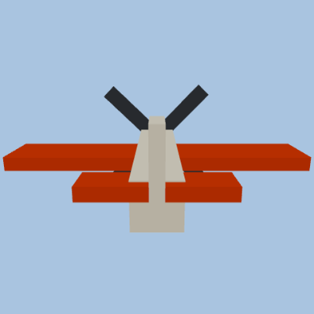
Classic tow plane
toy_planethe shipped default tow craft · picked when an entry names no aircraft
Every craft that can tow a background-text banner around the property, in the order the Aircraft dropdown offers them (Settings ▸ Display ▸ Background text, on a Banner plane entry). Four groups are built in — the classic toy plane plus the eight silhouettes the flight tracker uses, the military & NASA roster, the fiction homages and the news helicopter — and below them one group per loaded, active aircraft or space pack. The two Fiction groups are affectionate nods described generically rather than by name; the Space ▸ Fiction pack is opt-in and ships unloaded. Each card is a 360° turntable of the craft alone (the banner it tows is hidden), framed to fill its frame, with props and rotors turning.

toy_plane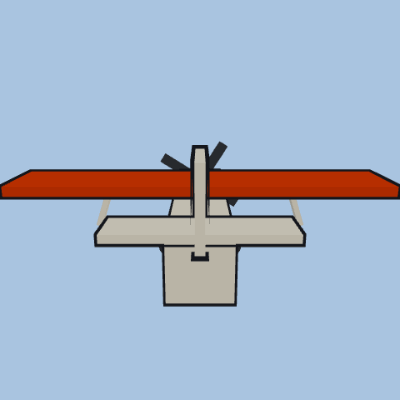
ga-high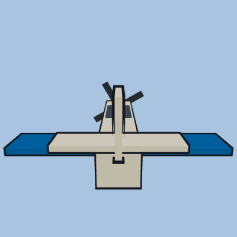
ga-low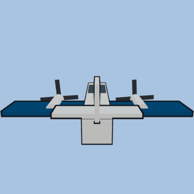
twin-prop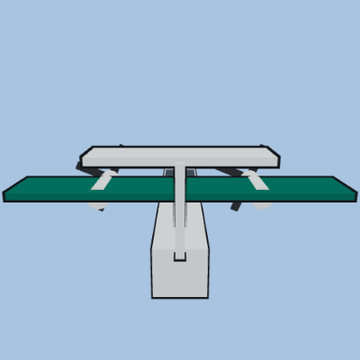
turboprop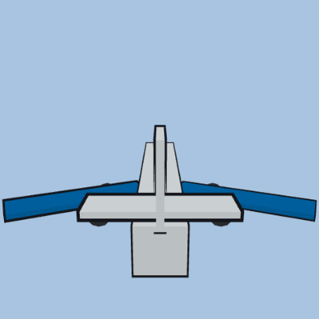
narrowbody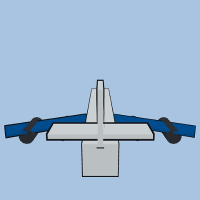
widebody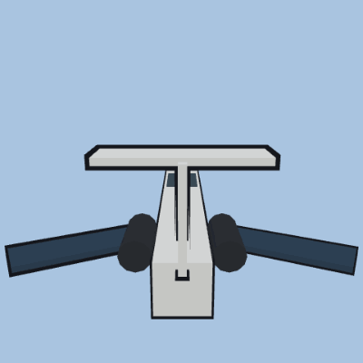
bizjet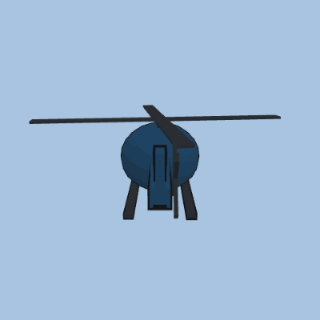
heli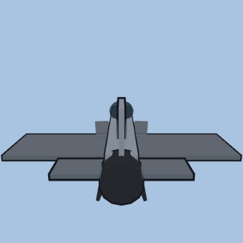
f16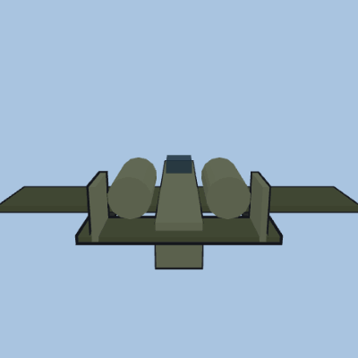
a10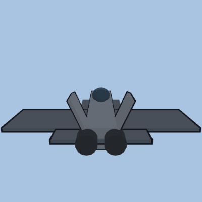
f22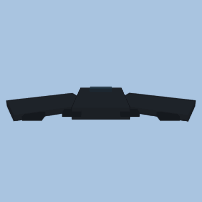
b2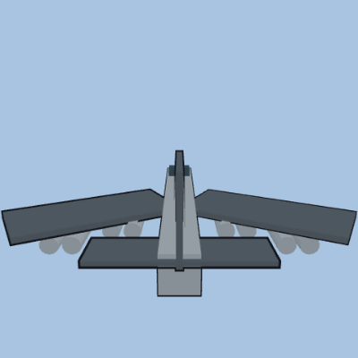
b52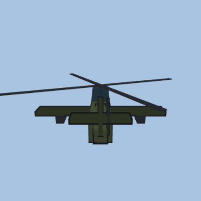
apache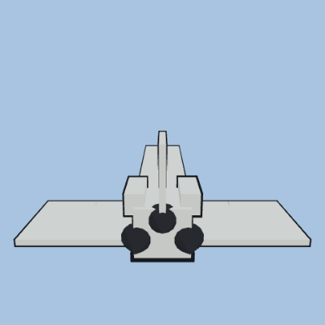
shuttle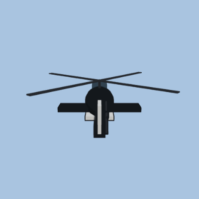
airwolf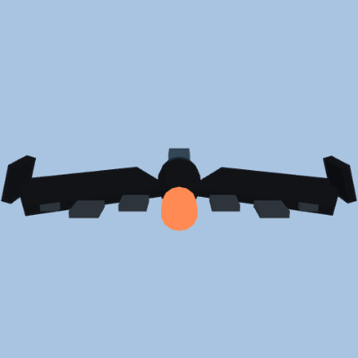
batwing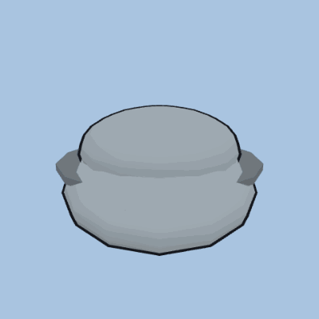
trimaxion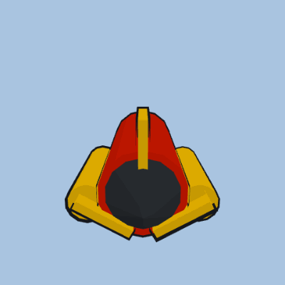
einstein_rocket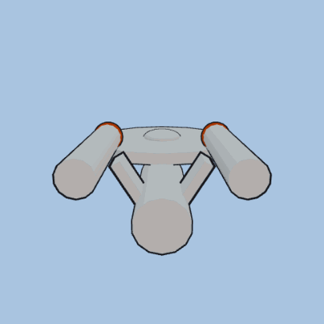
enterprise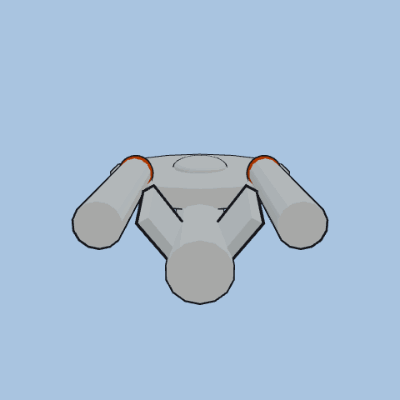
enterprise_c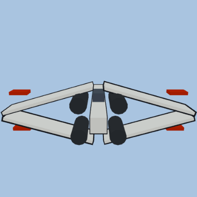
xwing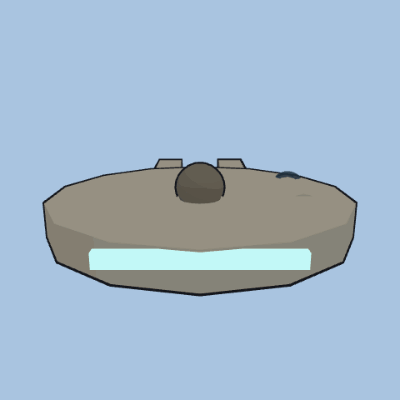
falcon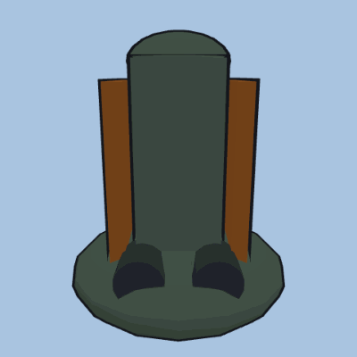
slave1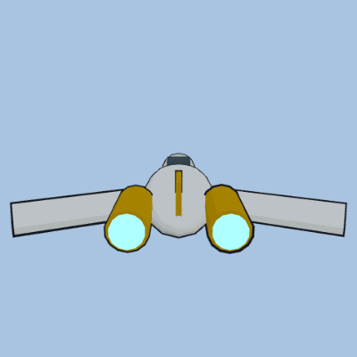
naboo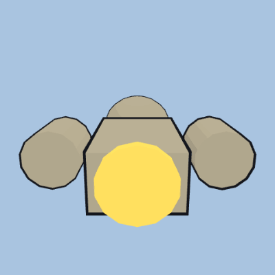
serenity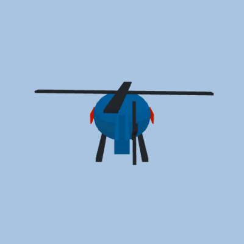
news_chopper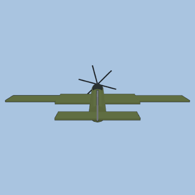
base-aircraft-military-historical/spitfire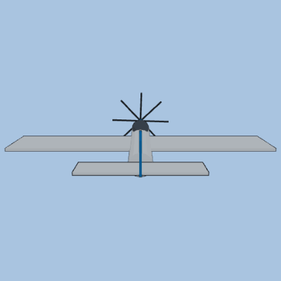
base-aircraft-military-historical/p51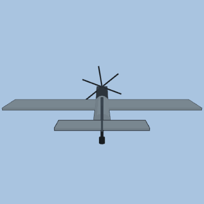
base-aircraft-military-historical/bf109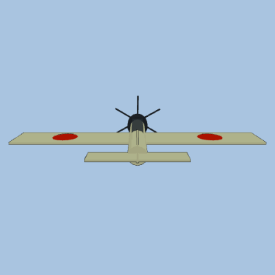
base-aircraft-military-historical/a6m_zero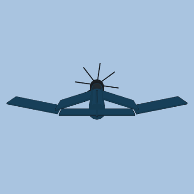
base-aircraft-military-historical/f4u_corsair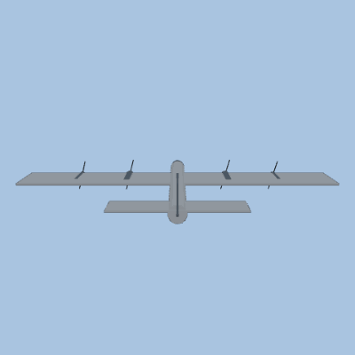
base-aircraft-military-historical/b17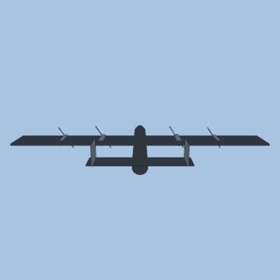
base-aircraft-military-historical/lancaster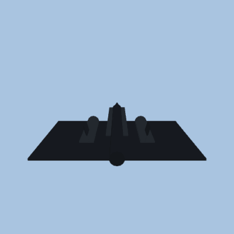
base-aircraft-military-historical/sr71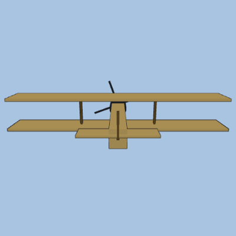
base-aircraft-military-historical/sopwith_camel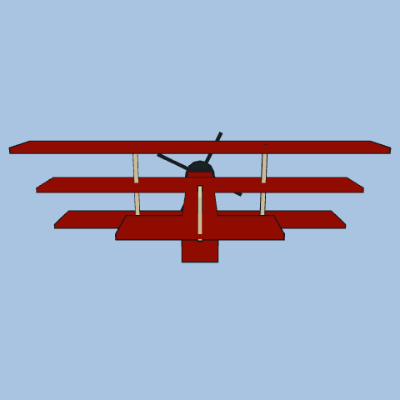
base-aircraft-military-historical/fokker_dr1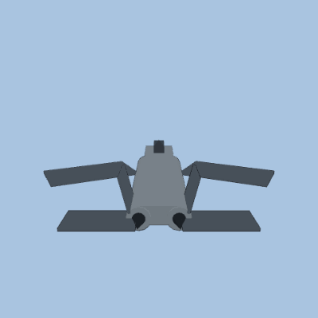
base-aircraft-military-modern/f14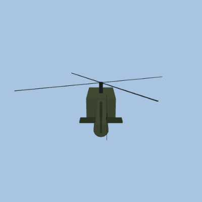
base-aircraft-military-modern/uh1_huey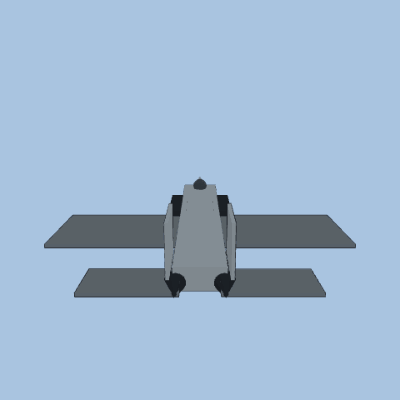
base-aircraft-military-modern/f15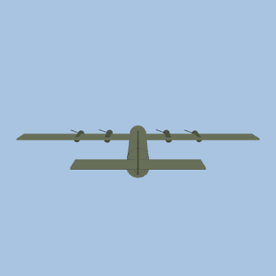
base-aircraft-military-modern/c130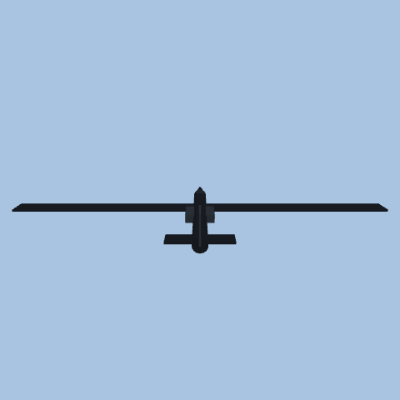
base-aircraft-military-modern/u2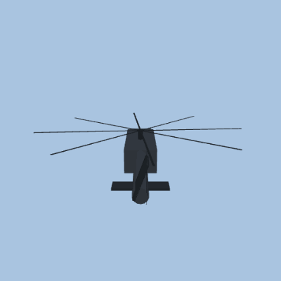
base-aircraft-military-modern/uh60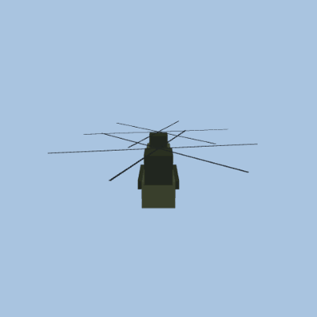
base-aircraft-military-modern/ch47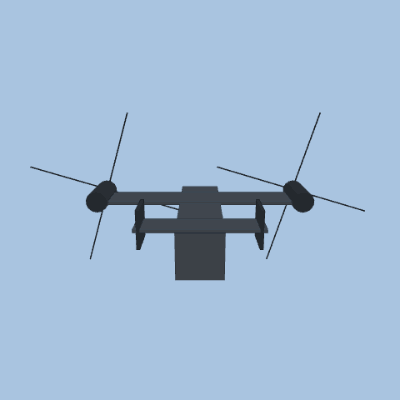
base-aircraft-military-modern/v22_osprey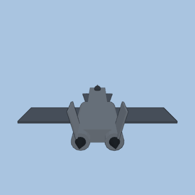
base-aircraft-military-modern/mig29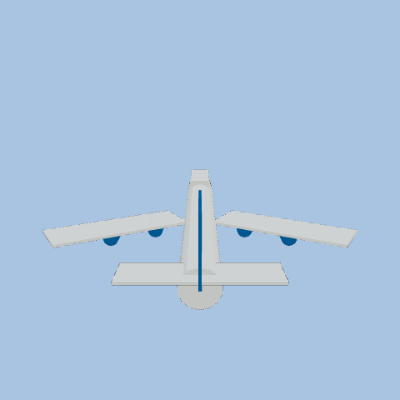
base-aircraft-civil/b747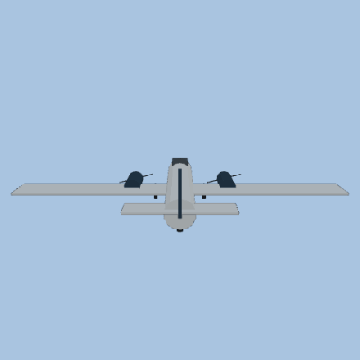
base-aircraft-civil/dc3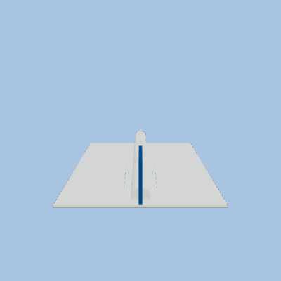
base-aircraft-civil/concordebase-aircraft-civil/cessna172base-aircraft-civil/piper_cubbase-aircraft-civil/dhc2_beaverbase-aircraft-civil/super_constellationbase-aircraft-civil/narrowbodyfranchise-space-fiction/flying_saucerfranchise-space-fiction/science_vesselfranchise-space-fiction/battle_carrierfranchise-space-fiction/modular_transport